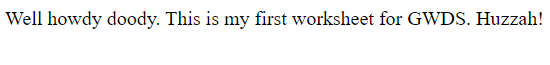

Worksheet 1
Click here to view the code for worksheet 1.
Click here to view the website for worksheet 1.
This worksheet was very straight foward, I'm not surprised
it was very easy as it was the first worksheet that was just
getting us used to using visual studio code and coding in HTML.
It didnt make anything amazing as it literally just displayed
the message written between the 'P' tags.
Despite that I
feel like this task definatley helped when getting to grips
with visual studio code as I had never used it before.
Worksheet 2 and 3
Click here to view the code for worksheet 2 and 3.
Click here to view the website for worksheet 2 and 3.
I found these weeks very intresting and helpful as it really developed my
skills and what I am capable of doing with HTML and CSS. It tought me how
to make lists, center text, add images and lots more useful skills that
would help when building a website. I didn't find anything overly complicated
or confusing as the steps on the worksheets where very helpful.
Overall these tasks where very useful and really boosted my confidence when
using HTML and CSS.
Worksheet 4 and 5
Click here to view the code for worksheet 4 and 5.
Click here to view the website for worksheet 4 and 5.
These final weeks on the worksheets, 4 and 5, where very useful as I learnt
how to use flexbox. This is very useful as it makes a website look so much
more professional with very little extra code. I also learnt how to make buttons,
which is obviously a very important skill when building a website as it helps
users to navigate to other pages or parts of a page where you want them to go to.
In addition to this I also added a video in the page which I thought looked really
good and again makes a website look a lot more professional.